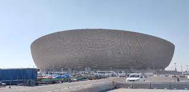
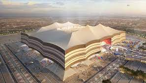
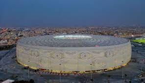
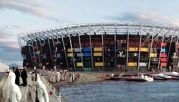
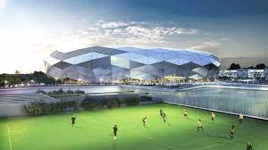
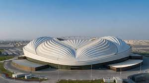
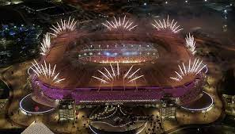

O Estádio Internacional Khalifa, também conhecido como Estádio Nacional é um estádio multi-uso localizado em Doha, no Qatar. Possui capacidade para 50.000 espectadores e foi inaugurado no ano de 1976.
O Estádio Nacional de Lusail, ou Estádio Icônico de Lusail é um estádio de futebol localizado em Lusail no Catar , inaugurado em 22 de novembro de 2021. Capacidade: 80.000
Estádio Al Bayt é um estádio de futebol em Al Khor, Catar, destinado a partidas da Copa do Mundo FIFA de 2022. O contrato de construção do estádio foi concedido a Salini e Cimolai em 2015. Capacidade: 60.000 Inauguração: 30 de novembro de 2021
Estádio Al Thumama é um estádio de futebol em Al Thumama, Catar. Capacidade: 40.000 Inauguração: 22 de outubro de 2021
O Estádio 974, é um dos estádios propostos pelo Catar, para a Copa do Mundo FIFA de 2022. O estádio recentemente mudou o nome devido a quantidade de contêineres que foram suficientes para sua construção. Tem uma capacidade planejada de quarenta mil espectadores. Inauguração: 30 de novembro de 2021
O Estádio da Cidade da Educação é um dos estádios construídos no Catar, para a Copa do Mundo FIFA de 2022. O estádio está localizado em Doha, capital do país, e tem uma capacidade superior a 45 mil.Inauguração: 15 de junho de 2020
O Estádio Al Janoub, antigamente conhecido como Al Wakrah, é um situado em Al-Wakrah, no Catar. Inaugurado em 16 de maio de 2019, tornou-se o segundo estádio proposto para Copa do Mundo de 2022 a ser concluído. Apresenta um design pós-modernista e neo-futurista curvilíneo.
Estádio Ahmed bin Ali ou Estádio Al Rayyan é um estádio multiuso localizado na cidade de Al Rayyan no Catar. O estádio original, construído em 2003 e com capacidade para 21.282 pessoas, foi demolido em 2015 para dar lugar a um novo estádio para a Copa do Mundo de 2022 , sediada no Catar, será uma das oito sedes. O novo estádio possui capacidade de assentos para 44.740 pessoas.
